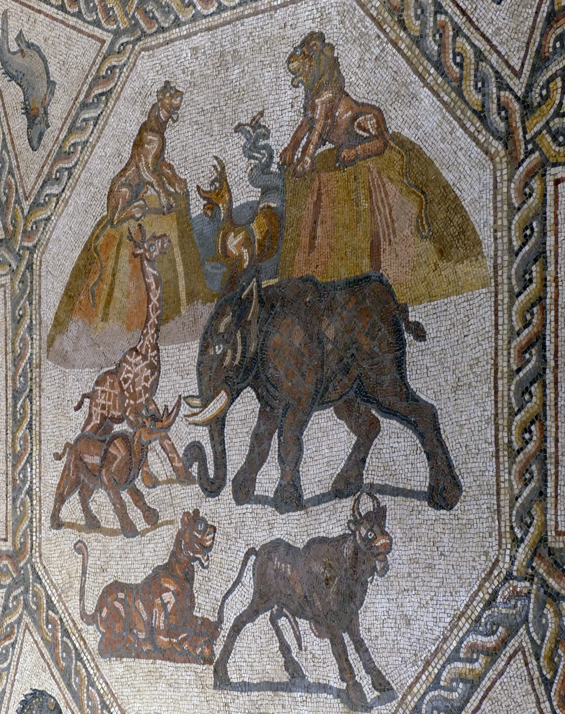

The last few centimetres never come off with a spade. They come off with a trowel held almost flat, and then with brushes: a soft paintbrush, a hand brush with its bristles cut short, a pastry brush, anything that will not scratch. The sand is not swept away so much as pushed, a stroke at a time, into a low ridge at the side that someone lifts out with a dustpan and a bucket. The tesserae come up one by one, little cubes of limestone and marble and glass a centimetre across, set in lime mortar on a bed of crushed tile. Where the mortar has rotted they lie loose, and a careless stroke can lift them out of their places for good.
Dry, a floor is a disappointment. A film of dust lies in every joint, the stone is chalky, the reds come up pink and the blacks grey. So before the photographer climbs the ladder, someone goes over it with a sponge and a bucket, or a garden sprayer, and for a few minutes the floor looks as it did when it was new and polished: the colours come up dark and deep, the glass glints, and the picture can be read. Then it dries from the edges in. If the floor is to be lifted, its face is glued to cloth, the bedding is cut away beneath it in sections, and each piece is turned over, cleaned from the back and laid on a new support before it is turned face up again and the cloth is soaked off.